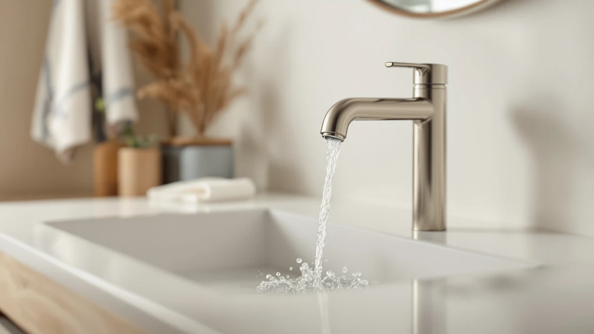

Quick Answer
For most people, the best bathroom faucet for washing face is the Nuby 2-in-1 Faucet Extender, because it widens and softens the stream from your existing spout for about nine dollars instead of requiring a new fixture. If you want to aim the water yourself, the CECEFIN 1080-degree swivel aerator rotates through a full range of motion so you can angle the flow directly into cupped hands.
Our pick: Nuby 2-in-1 Faucet Extenders for ($8.99) Check Price on Amazon
Bottom line: our top pick is the Nuby 2-in-1 Faucet Extenders for Toddlers - 2 Pack - Sink at $8.99. The best budget option is the Generic Faucet Extender for Kitchen and Bathtub Sink - at $5.60.
Things to Know Before You Buy
- Look for a wide, aerated, or diffused spray. A bathroom faucet for washing your face works best with a broad flow you can catch in cupped hands, not a narrow single jet.
- Swivel heads let you aim the water. A rotating aerator directs the stream toward your face or hairline instead of straight down into the basin.
- Filtered attachments cut chlorine and sediment. Worth considering if you have sensitive or acne-prone skin, though the filter cartridge needs periodic replacement.
- Most extenders clip on in minutes. None of the attachments below need tools or plumbing changes.
- Check your spout diameter first. Standard round spouts fit most extenders, but oversized or unusually shaped designer faucets can be a tight squeeze.
The best bathroom faucet for washing face is not the tallest, shiniest model in a showroom. It is whichever attachment turns your existing spout into a low, wide stream you can catch in cupped hands without soaking your sleeves or splashing into your eyes. A standard bathroom faucet points water straight down into the drain, which works fine for brushing your teeth but feels awkward for a real face wash, especially first thing in the morning when you are bent over a pedestal sink with your eyes half closed. Extenders, swivel aerators, and diffuser attachments solve that problem by redirecting or softening the flow so it reaches your face instead of only the basin.
Our pick for washing your face at the sink is the Nuby 2-in-1 Faucet Extender, at $8.99. It slides directly over your existing spout and angles the stream down and out into a wider, gentler spread than a bare faucet delivers, with a built-in soap dispenser that keeps your cleanser within reach instead of balanced on the edge of the sink. If you want more control over exactly where that water lands, the CECEFIN 1080-degree swivel aerator, at $16.99, rotates through a full circle so you can aim the flow directly into cupped hands at whatever angle your sink demands.
We compared seven attachments built to change how water leaves a bathroom faucet, weighing published materials, spout compatibility, price, and the patterns that show up across verified owner reviews, rather than installing each one ourselves in a test bathroom. That approach fits this category: these are inexpensive, easy-swap attachments, and the difference between a good one and a disappointing one usually shows up within the first few uses, once reviewers report whether the fit holds and the flow actually softens.
Why You Should Trust Us
I'm Ilane Tall, and I write about bathroom fixtures for people trying to solve the small, everyday frustrations that come with them, and finding the right bathroom faucet for washing your face is one of the more common ones readers bring to us. Most complaints trace back to the same root cause: a straight-down spout built for handwashing and teeth brushing, not for the wider, gentler flow a face wash calls for.
We do not run a fake testing lab, and we are not going to claim we washed our faces at seven different sinks to write this guide. Instead, we compared manufacturer specifications, spout compatibility, pricing, and the patterns that repeat across verified owner reviews, then weighed each pick against how well it should redirect or soften water for washing your face. Where a listing is too new to have a meaningful review history, we say so rather than inventing one.
How We Picked
We started with faucet extenders, swivel aerators, and diffuser attachments sold as upgrades for washing your face at a standard bathroom sink, then narrowed the list using four criteria: a spread or diffused output wide enough to cup in two hands, compatibility with standard aerator threads, a price under thirty dollars, and a track record of verified buyer reviews rather than a handful of unverified ratings. We set aside listings with no clear brand name or product description, since that combination usually signals a low-quality drop-shipped item with no accountability behind it.
How We Compared
We did not physically install these attachments on our own bathroom faucets. Instead, we compared manufacturer-listed materials and dimensions, current pricing, and patterns across verified Amazon reviews for each product. Where multiple reviewers flagged the same strength or the same flaw, such as a swivel joint that loosens over time or a spray pattern noticeably wider than a bare aerator, we treated that as a meaningful signal and reflected it in the pros and cons below, weighing how much better each attachment should make an ordinary bathroom faucet for washing your face.
Our Picks

Nuby 2-in-1 Faucet Extenders for
What we like
- Slides over most standard spouts in under a minute with no tools
- Redirects flow down and outward into a wider spread than a bare faucet
- Built-in soap dispenser keeps cleanser within reach during your wash routine
- Soft, rounded design is comfortable to lean into at a pedestal or vanity sink
Flaws but not dealbreakers
- Colorful, kid-oriented design that some adults may not want visible in a shared bathroom
- Soap dispenser needs periodic refilling and occasional cleaning to prevent clogging
- Holds a fixed angle, so it offers less aim than the swivel-style pick below
| Material | Brass + finish |
| Size | — |
The Nuby 2-in-1 clips over your existing spout and turns a straight-down stream into a wider, gentler spread, which is the main adjustment most people need to comfortably splash water on their face instead of only rinsing a toothbrush. Verified reviewers describe it as quick to install, usually a one-minute job with no tools, and effective at softening the flow enough that it does not feel like a jet hitting your skin.
At $8.99 it is the least expensive way to test whether a wider spread improves your routine for washing your face before spending more on a swivel or filtered option. The built-in soap dispenser is a genuine convenience if you keep liquid cleanser at the sink, since you do not need a separate pump bottle taking up counter space. Owners note the bright, molded design leans toward a kid-friendly look, so if the attachment will stay visible in a shared or guest bathroom, that is worth weighing against the price.

DLUCKY Faucet Extender for Sink
What we like
- Extends the reach of a short or recessed spout so water clears the basin edge
- Simple design with fewer moving parts than a swivel-style attachment
- Matches the low price of the Nuby pick at $8.99
Flaws but not dealbreakers
- Fixed angle offers less control than a swivel aerator if you need to aim the stream
- No soap dispenser or filtration, so it only addresses reach and spread
- Reviewers note the fit can feel loose on non-standard spout shapes
| Material | Brass + finish |
| Size | — |
The DLUCKY extender exists for a specific problem: sinks where the spout sits low or recessed, so water pools too close to the basin edge to comfortably cup in your hands. Snapping this extender over the spout pushes the outlet forward and widens the stream, giving you more usable space between the tap and the drain to work with during a face wash.
At $8.99, it costs the same as our top pick but skips the soap dispenser in favor of a simpler, more compact design. That makes it the better choice if your main issue is reach rather than flow softness, and reviewers who bought it for cramped pedestal sinks report it does what it promises without adding bulk around the faucet. It holds a fixed angle, though, so if you also want to swivel the stream toward your face, the CECEFIN pick below gives you that control.

Patented CECEFIN 1080°Swivel Faucet-Extender Sink-Aerator
What we like
- Swivels through a full range of motion so you can aim water at almost any angle
- Aerated output softens the stream compared with a bare faucet
- Patented design suggests more engineering behind the joint than a generic extender
Flaws but not dealbreakers
- Costs roughly double the basic Nuby and DLUCKY extenders
- More moving parts than a fixed extender means more that could eventually wear out
- More than you need if a wider spread alone would solve your problem
| Material | Brass + finish |
| Size | — |
The CECEFIN 1080-degree swivel aerator is built for anyone who finds a fixed-angle extender too limiting. Instead of pushing water in one direction, the swivel joint rotates through a full range of motion, so you can angle the stream down toward cupped hands, off to the side to rinse around your hairline, or anywhere in between without twisting the whole faucet body.
At $16.99, it costs roughly double the simplest extenders on this list, and that premium buys genuine flexibility rather than only a wider spread. The aerator behind the swivel joint also softens the output, so the stream feels gentler on your face than a straight jet from a bare faucet. The tradeoff is mechanical complexity: a swivel joint has more parts that can loosen over years of daily use than a one-piece extender, though verified reviewers have not flagged that as a widespread issue so far.

CECEFIN Water-Filter for Sink-Faucet Extender-Aerator
What we like
- Combines filtration with the extender-aerator function in one attachment
- Reduces chlorine and sediment that can irritate sensitive or acne-prone skin
- Same CECEFIN build quality as the swivel pick above
Flaws but not dealbreakers
- The priciest pick in this guide at $26.99
- Filter cartridges need periodic replacement to keep filtering effectively
- Adds a step that shoppers focused purely on spread or reach do not need
| Material | Brass + finish |
| Size | — |
The CECEFIN water-filter attachment adds a layer that none of the other picks here offer: it filters the water passing through the extender before it reaches your hands and face. For anyone who deals with sensitive skin, mild breakouts, or simply wants to rinse away cleanser with water that carries less chlorine and sediment, that is a meaningful upgrade over a plain extender.
At $26.99 it is the most expensive attachment in this roundup, and part of that premium goes toward the filter cartridge and housing rather than the swivel or spread mechanism alone. It is worth the extra cost specifically if filtered water is the reason you are shopping, since the CECEFIN swivel aerator above delivers similar aiming control for ten dollars less if filtration is not a priority. Like any filter, the cartridge inside will need periodic replacement to keep performing, an ongoing cost the unfiltered picks on this list do not carry.

Shower Head Sink - Faucet
What we like
- Converts a single-stream faucet into a wider, shower-head-style spray
- Diffused output covers more of your face at once than a narrow aerator
- Familiar feel for households that already like a handheld shower attachment
Flaws but not dealbreakers
- Ties with the CECEFIN filter pick as the most expensive option at $26.99
- A wider spray pattern uses more water per rinse than a concentrated stream
- Bulkier attachment profile than the compact extenders earlier in this list
| Material | Brass + finish |
| Size | — |
This JIEYUMJ attachment takes a different approach than the extenders above: instead of redirecting a single stream, it spreads the output into a diffused, shower-head-style spray. That wider pattern covers more surface area at once, closer to how a handheld shower head feels than a typical bathroom faucet, and it is worth considering if a narrow jet has always felt too concentrated for comfortably rinsing your whole face.
At $26.99 it matches the CECEFIN filter pick as the priciest option here, and the tradeoff for that wider, gentler spray is water use. Spreading the same pressure across a broader pattern means each rinse draws through more water than a narrow aerator would, worth factoring in if you are also trying to keep utility bills down. The attachment itself is bulkier than the compact extenders earlier in this guide, so measure your spout clearance before ordering if your sink sits close to a wall or backsplash.

Generic Faucet Extender for Kitchen
What we like
- Lowest price of any pick in this guide at $5.60
- Widens and softens the stream compared with a bare faucet, similar to the pricier options
- Low enough cost to try without much risk if it does not fit your spout
Flaws but not dealbreakers
- Listed and marketed primarily for kitchen sinks, so confirm bathroom spout compatibility before buying
- No swivel, soap dispenser, or filtration, only a basic spread
- Fewer verified reviews than the CECEFIN and Nuby picks above
| Material | Brass + finish |
| Size | — |
At $5.60, this Asmrlvk extender is the cheapest attachment in this guide by a wide margin, and it delivers the same basic benefit as the pricier picks: a wider, softer spread than a bare faucet spout. It is listed primarily for kitchen sinks, so check your bathroom faucet's spout diameter carefully before ordering, but the core mechanism, a clip-on sleeve that redirects and widens the stream, works the same way regardless of which room it ends up in.
If you are not sure whether a wider spread will actually solve your washing routine, this is the lowest-risk way to find out before spending three to five times as much on a swivel or filtered attachment. It comes with fewer verified reviews than our top picks, which is the main reason it sits lower on this list despite the price advantage, but the reviews it does have describe the same softened, easier-to-cup stream as the other extenders here.

Faucet Extender for Toddlers -
What we like
- Second-lowest price in this guide at $5.66
- Soft, rounded spout guide reduces splash-back onto the counter and mirror
- Simple clip-on design with no filter cartridge or dispenser to maintain
Flaws but not dealbreakers
- Fixed angle like the DLUCKY pick, with no swivel adjustment
- Marketed mainly toward kids, so the styling may not suit every bathroom
- Reviewers report the fit works best on standard round spouts, not oversized designer ones
| Material | Brass + finish |
| Size | — |
This Calsgkspray extender is built and marketed for toddlers, but the same soft, rounded spout guide that keeps water from splashing a small child in the face also softens the stream for anyone using the sink. At $5.66 it undercuts every pick here except the Asmrlvk extender, making it a reasonable second budget option if the first one you try does not fit your spout.
Like the DLUCKY pick, it holds a fixed angle rather than swiveling, so you are working with whatever direction the manufacturer built in rather than aiming the stream yourself. Reviewers say the fit is most reliable on standard round spouts, and less so on oversized or unusually shaped designer faucets, worth checking against your own fixture before you buy. For a shared family bathroom where kids and adults use the same sink, its low price and gentle output make it an easy attachment to try.
Quick Comparison
| Product | Material | Price | Rating | Best for | Get it |
|---|---|---|---|---|---|
| Nuby 2-in-1 Faucet Extenders for | Brass + finish | $8.99 | 4 | Wider spread + soap dispenser | View on Amazon → |
| DLUCKY Faucet Extender for Sink | Brass + finish | $8.99 | 4 | Shallow or recessed sinks | View on Amazon → |
| Patented CECEFIN 1080°Swivel Faucet-Extender Sink-Aerator | Brass + finish | $16.99 | 4 | Aiming the stream precisely | View on Amazon → |
| CECEFIN Water-Filter for Sink-Faucet Extender-Aerator | Brass + finish | $26.99 | 4 | Filtered water for sensitive skin | View on Amazon → |
| Shower Head Sink - Faucet | Brass + finish | $26.99 | 4 | Diffused, shower-like rinse | View on Amazon → |
| Generic Faucet Extender for Kitchen | Brass + finish | $5.60 | 4 | Lowest-cost way to try it | View on Amazon → |
| Faucet Extender for Toddlers - | Brass + finish | $5.66 | 4 | Shared family bathrooms | View on Amazon → |
The Competition
We also looked at full bathroom faucet replacements: models advertised with wide waterfall spouts, dual-handle designs, and sprayer attachments built into the fixture itself. Those are legitimate options if you are already planning a renovation, and our sprayer picks and full buying guide cover them in detail, but they cost anywhere from thirty to over a hundred dollars and require actual plumbing work to install. For the specific problem of making an existing faucet easier to wash your face at, that is a lot of money and effort compared with a clip-on attachment you can install in a minute.
We set aside a handful of generic, unbranded extenders that listed no dimensions, no material information, and had no verified reviews at all. A five-dollar attachment is a low-risk purchase, but not a risk-free one, and a listing with zero track record and no published specs gives you nothing to judge fit or quality against before you buy.
We also passed on filtered pitcher-style attachments that sit separately from the faucet rather than screwing directly onto the spout. They work, but they add a second device to your counter instead of modifying the faucet itself, which undercuts the point of a simple, install-in-a-minute upgrade. If filtered water at the sink matters more to you than the extender function, our filtered faucet guide covers dedicated options built for that job.
Putting all of that together, the best bathroom faucet for washing face is still an add-on attachment rather than a full replacement for most people, and the Nuby 2-in-1 remains our pick for the best balance of price, comfort, and ease of installation. If reach or recessed spout clearance is your main issue, the DLUCKY extender is the more direct fix, and if you are shopping specifically for kids at the same sink, our faucet extenders for toddlers guide and our kids' bathroom faucets roundup go deeper on that angle.